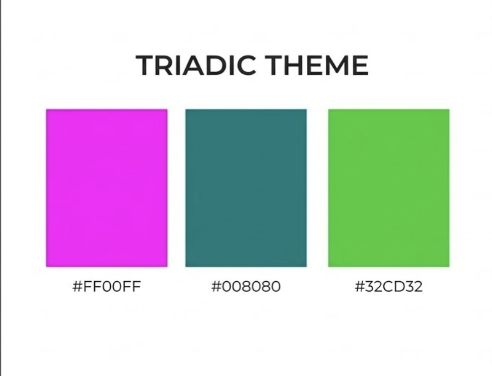
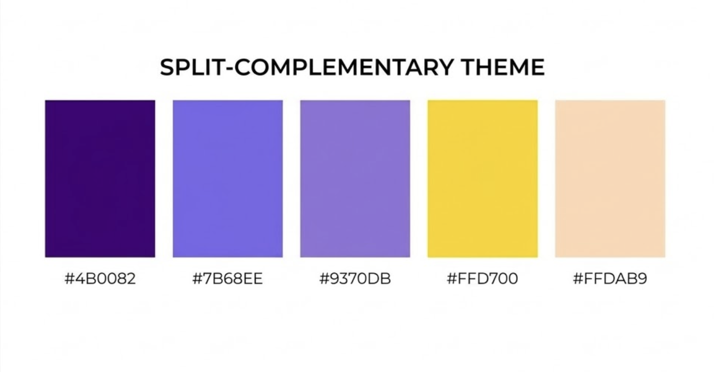

Project: Color Themes
Below are five distinct color themes created in Photoshop to demonstrate visual harmony and contrast.
| Theme Type | Photoshop Design | Description |
|---|---|---|
| Monochromatic |  |
Uses different values (tints and shades) of a single hue. This creates a clean, soothing, and professional look. |
| Analogous |  |
Colors that are next to each other on the color wheel, creating a serene and comfortable design. |
| Complementary |  |
Colors opposite each other on the wheel. This provides high contrast and high impact. |
| Triadic |  |
Three colors equally spaced around the color wheel for a vibrant, balanced feel. |
| Split-Complementary |  |
A base color plus the two colors adjacent to its complement. Offers contrast without the intensity of a pure pair. |